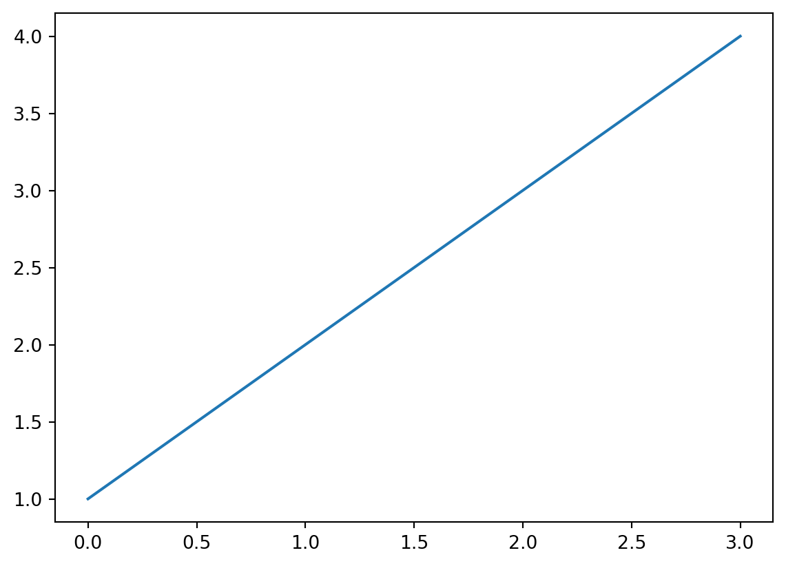

Show the code
import matplotlib.pyplot as plt
plt.plot([1,2,3,4])
plt.show()
Acoustics Research Centre, University of Salford
Bart Forrier
Seimens Digital Industries Software
Fabio Bianciardi
Seimens Digital Industries Software
January 1, 2025
Transfer Path Analysis is a term used to describe a broad class of methods that evaluate the vibro-acoustic performance of complex built-up structures. Applications of TPA can be catagorised as diagnostic or predictive. Diagnostic applications consider an and aim to quantify the relative contributions of the various vibration sources present to the overall vibro-acoustic response. These contributions are often rank ordered to identify troublesome sources and so inform design modifications for improved performance. Predictive applications instead aim to simulate the overall response of a structure , i.e. they concern a virtual assembly. This is done by adopting a component-based approach, whereby individual components are first characterised, before being substructured together to build a model of the assembly. This model is then subject to external forces that describe, in an equivalent way, the internal (operational) mechanisms of vibration sources present. This approach is often termed Component-based TPA, or Vibro-Acoustic Virtual Prototyping (VAVP) .
In either application, a TPA exercise will inevitably involve some experimental testing, either on the assembly (diagnostic) or at a component level (predictive). Consequently, any results obtained will be subject to experimental error/uncertainty. If these results are to inform design changes or set targets, it is important that some quantitative measure of their reliability is available. After all, a prediction is only meaningful when it’s accompanied by a measure of its uncertainty . To this end, we are interested in the analysis of uncertainty within the general framework of TPA.
To deal with the above, we introduce (U-TPA), a general framework for uncertainty estimation within TPA. U-TPA is based on the so-called Unscented Transform (UT) , which has seen tremendous success in the field of state-estimation , where it is used to propagate uncertainty (mean and covariance) through arbitrary non-linear dynamical functions. In contrast to existing methods, U-TPA provides second-order accuracy (at the computational cost of first-order methods) and can be applied immediately to any form of TPA, including formulations with complex regularisation schemes for which first order methods are not available.
Whilst TPA as a general methodology has been around for over three decades, only in recent years have efforts been devoted to the treatment of its uncertainty. The most complete treatment is found in where Meggitt et al. present a linearised (first-order) framework for the propagation of uncertainty through inverse force identification , substructuring (primal and dual) and forward response prediction. The framework was shown to give good agreement with Monte-Carlo methods for low-to-mid levels input uncertainty, with deviations occurring at higher levels (expected given first-order accuracy). The importance of capturing any correlations between measurements (notably FRFs that share the same excitation ) was stressed and shown to be crucial for obtaining an accurate estimate of uncertainty.The above framework was derived from the standard form of the TPA equations, including over-determined solutions but with no regularisation on either the force identification or substructuring steps. This is somewhat limiting, as regularisation is often employed to better condition inverse problems like those described above. To overcome this limitation would mean having to re-derive the multi-dimensional Jacobian matrices that describe the linearised set of equations, including the regularisation scheme of interest. To the authors knowledge no such derivations are available in the literature. In contrast, the proposed U-TPA is a derivative-free method, meaning it can be applied immediately to any form of the TPA equations (including regularised solutions).
In addition to the above works, several authors have presented more targeted treatments of uncertainty. The earliest account relevant to TPA is that by Voormeren et al. who proposed a first-order uncertainty propagation for the dual substructuring formulation. Unlike later developments, it was assumed in this work that the underlying uncertainty was uncorrelated, thus yielding a simplified set of equations of limited practical application. This work was further developed in , where authors introduced possible correlations between variables. A notable difference between the treatments found in and is in how the uncertainty of variables is handled. In , a complex quantity and its conjugate are treated as independent variables . In , the real and imaginary parts of each complex quantity are treated as separate (though possibly correlated) variables. Though this latter representation is arguably more intuitive, both approaches effectively provide the same uncertainty propagation.
The above treatments of uncertainty are all based on a linearisation of the TPA equations, as described by the Law of Propagation of Uncertainty (LPU) . Whilst this approach is recommended by the ISO supported document (GUM) , it is inherently limited to small levels of uncertainty and weakly non-linear functions. However, many of the TPA equations are in-fact non-linear (with respect to the uncertain parameters), and so these first-order methods breakdown for mid-high levels of uncertainty. In authors present a second-order extension of the framework presented in by introducing the Hessian (matrix of second-order derivatives) alongside the previously established Jacobians. Results show improved accuracy at higher levels of uncertainty, albeit it at the cost of complexity and computational effort. Though extended to second-order accuracy, this work remains limited to the standard form of the underlying equation, i.e. in the absence of any regularisation.
In contrast to the above methods, which attempt to approximate the underlying TPA equations (to first or second-order), the proposed U-TPA involves the direct evaluation of the underlying functions, and hence implicitly captures their non-linearity. The functions are not however, evaluated for a set of randomly sampled inputs, as is done for the computationally expensive Monte-Carlo simulation, rather, the functions are evaluated for a reduced set of chosen , which together provide an approximation of the input’s multi-dimensional distribution. Remarkably, it has been shown that this simple sampling-based approach guarantees at least second-order accuracy, and does so with computational effort similar to typical first order methods . Based on direct function evaluations, U-TPA can be applied directly to any formulation of the TPA equations, including arbitrary regularisation schemes or complex interface transformations. It is shown through a series of examples that U-TPA out performs first-order (LPU) methods in all cases yielding good agreement with Monte-Carlo simulations, and is able to accurately estimate the uncertainty of complex regularised inverse problems.
Having now introduced the context of this paper, its remainder will be structured as follows. In Section 2 we briefly recap the theory of TPA by introducing the three key equations. Section Section 3 is then devoted to the analysis of uncertainty in TPA, describing the Monte-Carlo (MC), Linearised Propagation of Uncertainty (LPU) and Unscented-TPA (U-TPA) methods. In Section \(\ref{sec:NumSim}\) we consider two numerical toy problems and compare the above methods; the first problem considers the influence of uncertain joint dynamics, and the second a typical inverse force identification. Section \(\ref{sec:Exp}\) then presents an experimental case study involving the inverse identification of forces, and their on-board validation. Finally, in Section \(\ref{sec:Conc}\) we draw some concluding remarks.
In this section we introduce the main theory relevant to this paper. We begin with a brief summary of the key TPA equations, followed by a description of the Monte-Carlo (MC), Linearisation (LPU) and Unscented Transformation (UT) analyses of uncertainty in the context of the TPA equations.
The theory underlying TPA is described in great detail in numerous papers, see for example . It is assumed that the reader is familiar with this theory, and so our description will be kept brief.
Effectively, there are three equations that govern majority of TPA exercises. These are expressed in the frequency domain (with explicit \(\omega\) notation omitted for clarity) and are described below.
\[ \mathbf{f} = \mathbf{Y}^+\mathbf{v} \tag{1}\] Here, \(\mathbf{Y}\in\mathbb{C}^{N_r\times N_f}\) is a complex \(N_r\times N_f\) matrix of Frequency Response Functions (FRFs) that relate the measured operational responses \(\mathbf{v}\in\mathbb{C}^{N_r}\) to the sought after forces \(\mathbf{f}\in\mathbb{C}^{N_f}\) and \(\square^+\) denotes a generalized matrix (pseudo-)inverse. If the FRFs are measured whilst the source and receiver components are assembled (denoted \(\mathbf{Y}_C\)), the acquired forces are termed (also equivalent forces). If the FRFs are measured on the receiver whilst the source is detached (denoted \(\mathbf{Y}_R\)), the acquired forces are termed . Blocked forces have the advantage that they are transferable between assemblies, thus enabling virtual prototyping and component-based simulation.
It should be noted that the measured FRF matrix \(\mathbf{Y}\) is typically subject to some interface transformation, for example the Virtual Point , so to obtain co-located translational and rotational DoFs. This transformation should be accounted for in any uncertainty analyses. For LPU, this requires obtaining a Jacobian said transformation. For UT and MC methods, which are based on function evaluations, no extra effort is required.
\[ \mathbf{p} = \mathbf{H}\mathbf{f} \tag{2}\] Here, \(\mathbf{H}\in\mathbb{C}^{N_p\times N_f}\) is a matrix of (forward) FRFs that relate the acquired force \(\mathbf{f}\in\mathbb{C}^{N_f}\) to the target response variables \(\mathbf{p}\in\mathbb{C}^{N_p}\). We have used the notation \(\mathbf{p}\) and \(\mathbf{H}\) for generality and to avoid confusion with \(\mathbf{v}\) and \(\mathbf{Y}\) used in Equation 1, though in general the response could be structural and/or acoustic. If a force has been acquired, the forward FRFs must be measured on the coupled assembly, i.e. with the source and receiver attached, \(\mathbf{H}_C\). This is commonly termed in-situ or blocked force TPA. If a contact force is measured, the forward FRF should be for the receiver alone, \(\mathbf{H}_R\). This is commonly termed classical or matrix inverse TPA.
In a TPA exercise, interest is usually on the ranked contribution of individual forces to the response \(\mathbf{p}\). This diagnostic analysis enables the identification of troublesome contributions, and the design of appropriate modifications.
\[ \mathbf{H}_C = \mathbf{Y} - \mathbf{Y}\mathbf{B}^{\rm T}\left(\mathbf{B} \mathbf{Y} \mathbf{B}^{ \rm T} + \mathbf{\Gamma}\right)^{-1} \mathbf{B}\mathbf{Y}, \tag{3}\] Here, $ _C^{N_CN_C}$ is the FRF matrix of the coupled assembly, \(\mathbf{Y}\in\mathbb{C}^{(N_S+N_R)\times(N_S+N_R)}\) is a block diagonal matrix containing the uncoupled FRF matrices of the source \(S\) and receiver \(R\) components, \(\mathbf{\Gamma}\in\mathbb{C}^{N_c\times N_c}\) is a matrix of joint flexibilities that describes the dynamics of the connecting DoFs, and \(\mathbf{B}\in\mathbb{Z}^{N_c\times(N_S+N_R)}\) is a signed Boolean matrix that controls between which DoFs equilibrium is enforced. Equation 3 can be used to estimate the forward FRF for use in Equation 2 when used with the blocked force. This is commonly termed Component-based TPA (CTPA) or Vibro-Acoustic Virtual Prototyping (VAVP).
Whilst commonly referred to as TPA, the use of sub-structuring makes this more of a predictive, as opposed to diagnostic, methodology. Interest is typically in the total system response, for example to facilitate auralisation of the virtual prototype.
TPA is largely an experimental methodology, relying on the measurement of assembly/component FRF matrices and operational responses; the variables \(\mathbf{Y}\), \(\mathbf{H}\) and \(\mathbf{v}\) through Equations 1 - 3 should be thought of as random variables as they are all subject to experimental uncertainty. This uncertainty can arise for a multitude of reasons, including: poor signal to noise ratio, inaccurate impact position/orientation when measuring FRFs, uncertain sensor position/orientation, etc. As stressed in the introduction, if the results of a TPA campaign are to guide product design, it is important that some quantitative measure of their reliability is available. To this end, we are interested in how this experimental uncertainty propagates through the TPA equations. To begin answering this question, it will be convenient to represent our TPA equations in a more general form,
\[\begin{equation}\label{genEq}
\mathbf{y} = G(\mathbf{x})
\end{equation}\] where \(\mathbf{x}\in\mathbb{R}^N\) is an \(N\) dimensional real vector of measured parameters, \(\mathbf{y}\in\mathbb{R}^M\) is an \(M\) dimensional vector of estimated parameters, and \(G(\square)\) is our general function, here representing the inverse force identification, forward response prediction or sub-structuring calculations. To admit this form, the complex quantities that are our measured FRFs and operational responses must be separated into their real and imaginary components, which we treat as separate variables. This separation can be represented by the element-wise function \(M(\quad)\), \[\begin{equation}
M\left(\begin{array} {c}
a+ib \\
c+id \\
e+if
\end{array}\right) = \left(\begin{array} {c}
a\\
b \\
c\\
d\\
e\\
f
\end{array}\right)
\end{equation}\] Note that any matrix quantities (i.e. FRFs) must first be vectorised by vertically stacking their columns, \[\begin{equation}
\mathbf{A} = \left[\begin{array}{ccc}
a& d &g \\
b & e & h\\
c & f &i
\end{array}\right] \qquad
\mathbf{\vec{A}} = \left(\begin{array}{ccc ccc ccc}
a& b &c &
d & e & f &
g & h &i
\end{array}\right)^{\rm T}
\end{equation}\] before separating their real and imaginary parts.
Using the above, the input (\(\mathbf{x}\)) and output (\(\mathbf{y}\)) vectors for the TPA equations are as follows: The inverse identification of forces \[\begin{align}\nonumber \mathbf{x} &= \left(\begin{array}{c} M(\mathbf{\vec{Y}}) \\\hline M(\mathbf{{v}}) \end{array}\right) \\ &= \left(\begin{array}{c c c c c | c c c c c} \mbox{Re}(Y_{11}) & \mbox{Im}(Y_{11}) & \cdots & \mbox{Re}(Y_{N_rN_f}) & \mbox{Im}(Y_{N_rN_f}) & \mbox{Re}(v_{1}) & \mbox{Im}(v_{1} &\cdots & \mbox{Re}(v_{N_r}) & \mbox{Im}(v_{N_r}) \end{array}\right)^{\rm T}\\ \mathbf{y} &= M(\mathbf{f}) = \left(\begin{array}{c c c c c} \mbox{Re}(f_{1}) & \mbox{Im}(f_{1}) & \cdots & \mbox{Re}(f_{N_f}) & \mbox{Im}(f_{N_f}) \end{array}\right)^{\rm T} \end{align}\] Prediction of operational response using acquried force \[\begin{align} \mathbf{x} &= \left(\begin{array}{c} M(\mathbf{\vec{H}}) \\\hline M(\mathbf{{f}}) \end{array}\right) \\ &= \left(\begin{array}{c c c c c | c c c c c} \mbox{Re}(H_{11}) & \mbox{Im}(H_{11}) & \cdots & \mbox{Re}(H_{N_pN_f}) & \mbox{Im}(H_{N_pN_f}) & \mbox{Re}(f_{1}) & \mbox{Im}(f_{1} &\cdots & \mbox{Re}(f_{N_f}) & \mbox{Im}(f_{N_f}) \end{array}\right)^{\rm T}\nonumber \\ \mathbf{y} &= M(\mathbf{p}) = \left(\begin{array}{c c c c c} \mbox{Re}(p_{1}) & \mbox{Im}(p_{1}) & \cdots & \mbox{Re}(p_{N_p}) & \mbox{Im}(p_{N_p}) \end{array}\right)^{\rm T} \end{align}\] Esitmation of forward FRF by sub-structuring \[\begin{align} \mathbf{x} &= \left(\begin{array}{c} M(\mathbf{[\vec{Y}]}) \\\hline M(\mathbf{\vec{Z}}_j) \end{array}\right) \\ &= \left(\begin{array}{c c c c c | c c c c c} \mbox{Re}(Y_{11}) & \mbox{Im}(Y_{11}) & \cdots & \mbox{Re}(Y_{MN}) & \mbox{Im}(Y_{MN}) & \mbox{Re}(Z_{11}) & \mbox{Im}(Z_{11}) &\cdots & \mbox{Re}(Z_{n_jn_j}) & \mbox{Im}(Z_{n_jn_j}) \end{array}\right)^{\rm T}\nonumber \\ \mathbf{y} &= M(\mathbf{\vec{H}}_C) = \left(\begin{array}{c c c c c} \mbox{Re}(H_{11}) & \mbox{Im}(H_{11}) & \cdots & \mbox{Re}(H_{N_CN_C}) & \mbox{Im}(H_{N_CN_C}) \end{array}\right)^{\rm T} \end{align}\]
Having established a common form for all our TPA equations, the task is now to establish a procedure to quantify the uncertainty in \(\mathbf{x}\) and estimate its propagation onto the output \(\mathbf{y}\).
To simplify the problem, it is common to assume that the experimental uncertainty introduced through measurement follows a multi-dimensional Normal distribution, and so \(\mathbf{x}\) can be described entirely by its mean vector \(\mu_\mathbf{x}\in\mathbb{R}^N\) and covariance matrix \(\Sigma_\mathbf{x}\in\mathbb{R}^{N\times N}\).
In the following subsections we outline three methodologies to analyses the propagation of uncertainty through \(G(\square)\). The first two, Monte-Carlo and Linearisation (LPU), are already been established in the literature. The third, based on the Unscented Transform (UT), is the main contribution of this paper.
Using a Monte-Carlo approach, we estimate the probability density function (PDF) of the output \(\mathbf{y}\) by randomly sampling the distribution of the input \(\mathbf{x}\). Failing an analytical solution for the PDF of the output, which is rarely available for problems of realistic complexity, the Monte-Carlo approach is the most robust approach for the propagation of uncertainty; it is frequently used to provide estimates for the evaluation of alternative methods. By evaluating the function \(G(\square)\) directly, we implicitly capture the effects of non-linearity and their influence on the output distribution. The main limitation of a MC simulation is simply the computation effort required, which can be great for high dimensional problems or expensive models.
A typical Monte-Carlo procedure is as follows:
To avoid uneessecary function evaluations, stopping criteria can be incorporated into the above by using a recursive calculation of, for example, the mean and covairance.
The above MC procedure will be used later as part of the numerical and experimental examples to provide a ground truth uncertainty propagation.
Perhaps the most common form of uncertainty propagation is that described by the (LPU). The LPU is described in great detail in the ISO supported document ‘’ (GUM), developed by the Joint Committee for Guides in Metrology. Effectively, it is based on a first order approximation of the function through which uncertainty is being propagated, and involves the propagation of input covariance using the partial derivatives of the underlying function.
Whilst the LPU provides a computationally efficient and analyical propagation of uncertainty, based on a linearised approximation of the model, it is only expected to yield accurate results for low levels of input uncertainty, or when applied to weakly non-linear functions. Nevertheless, its use is widespread and the method has been applied successfully to both inverse force identification and sub-structuring problems. In what follows we provide breif summary of the LPU method, including its application to the TPA equations described above.
The non-linear function \(G(\mathbf{x}_0+\boldsymbol{\Delta})\), whose input is perturbed by vector \(\boldsymbol{\Delta}\), can be expressed as a Taylor series about \(\mathbf{x}_0\) in the following form, \[\begin{align} \mathbf{y} &= G(\mathbf{x}_0 + \boldsymbol{\Delta})\\ &= G(\mathbf{x}_0) + \mathbf{D}_{\Delta } G + \frac{ \mathbf{D}^2_{\Delta } G}{2!} + \frac{ \mathbf{D}^3_{\Delta } G}{3!} + \frac{ \mathbf{D}^4_{\Delta } G}{4!} \cdots \end{align}\] where $^i_{} G $ denotes the total differential of \(G(\mathbf{x})\) when perturbed around \(\mathbf{x}_0\) by \(\boldsymbol{\Delta}\). The \(i\)th term in the above Taylor series is given by, \[\begin{equation} \frac{ \mathbf{D}^i_{\Delta} G}{i!} = \frac{1}{i!} \left(\sum_{j=1}^N {\Delta_j} \frac{\partial }{\partial x_j} \right)^i G(\mathbf{x})\Bigg |_{\mathbf{x}=\mathbf{x}_0} \end{equation}\] with \(\Delta_j\) denoting the \(j\)th element of the perturbation vector \(\boldsymbol{\Delta}\).
Linearisation assumes that all second and higher order terms contribute negligibly towards the output, and so, \[\begin{align} \mathbf{y} \approx G(\mathbf{x}_0) + \mathbf{D}_{\Delta } G \end{align}\] Taking outer products and expectations, the linearised mean and covariance of the output \(\mathbf{y}\) take the form, \[\begin{equation} \mu_\mathbf{y} = G(\mu_\mathbf{x})\qquad \mbox{and}\qquad \Sigma_{\mathbf{y}} = \mathbf{J}\Sigma_{\mathbf{x}}\mathbf{J}^{\rm T} \end{equation}\] where \(\mathbf{J}= \frac{\partial G(\mathbf{x})}{\partial \mathbf{x}}\) is termed the of \(G(\mathbf{x})\) and is a matrix of partial derivatives of the elements of \(\mathbf{y}\) with respect to the elements of \(\mathbf{x}\), \[\begin{equation} \mathbf{J} = \left[\begin{array}{cccc} \frac{\partial y_1}{\partial x_1} & \frac{\partial y_1}{\partial x_2} & \cdots & \frac{\partial y_1}{\partial x_{N}} \\ \frac{\partial y_2}{\partial x_1} & \frac{\partial y_2}{\partial x_2} & \cdots & \frac{\partial y_2}{\partial x_{N}} \\ \vdots & \vdots& \ddots & \vdots \\ \frac{\partial y_M}{\partial x_1} & \frac{\partial y_M}{\partial x_2} & \cdots & \frac{\partial y_M}{\partial x_{N}} \\ \end{array}\right] \end{equation}\]
It is worth noting that this approach to propagating covariance matrices forms the basis of the so-called Kalman Filter for non-linear systems. Though in common use, it is widely recognised as being of limited practical use due to its low first order accuracy. Furthermore, the need to analytically derive and implement the function Jacobian is often a complex and error prone process.
Whilst the Jacobian matrices for standard form TPA problems have been derived analytically , common variants that incorporate techniques such as regularisation or general interface transformations are not yet available. For this reason, the LPU remains quite limited in the wider context of TPA.
Below, we briefly summarise the LPU’s application to the key TPA equations. These will be used later as part of the numerical and experimental examples. Detailed derivations can be found in .
The input and output mean and covariance are given by, \[\begin{equation} \mu_{\mathbf{x}} = \left(\begin{array}{c} M(\mu_{\mathbf{\vec{Y}}}) \\ M(\mu_\mathbf{{v}}) \end{array} \right) \qquad \Sigma_\mathbf{x} = \left[\begin{array}{ll} \Sigma_\mathbf{Y} & \mathbf{0} \\ \mathbf{0}& \Sigma_\mathbf{v} \end{array}\right] \qquad \mbox{and}\qquad \mu_{\mathbf{y}} = M(\mu_\mathbf{{f}}) \qquad \Sigma_\mathbf{y} = \Sigma_\mathbf{f} \end{equation}\]
The Jacobian of the underlying function (Equation 1) is given by \[\begin{align} \mathbf{J} &= \left[ \begin{array}{c c} \mathbf{J}_{\mathbf{Y}} & \mathbf{J}_\mathbf{v} \end{array}\right]\\ \mathbf{J}_{\mathbf{Y}} &=\mathcal{M}\left(-(\mathbf{Y^+}\mathbf{v})^{\rm T}\otimes\mathbf{Y^+}, \left[\left(((\mathbf{I}-\mathbf{Y}\mathbf{Y^+})\mathbf{v})^{\rm T}\otimes\mathbf{Y^+} \mathbf{Y}^{\rm +H}\right)+ \left((\mathbf{Y}^{\rm +H} \mathbf{Y^{+}}\mathbf{v})^{\rm T}\otimes(\mathbf{I}-\mathbf{Y^+}\mathbf{Y}) \right)\right]\mathbf{K}\right) \\ \mathbf{J}_{\mathbf{v}} &= \mathcal{M} \left(\mathbf{Y}^+,\mathbf{0}\right) \end{align}\] where \(\mathcal{M}(A,B)\) is an element-wise function defined as, \[\begin{equation} \mathcal{M}(A,B) = \left[\begin{array}{c c} \mathrm{Re}\left(A+B\right) & \phantom{-}\mathrm{Im}\left(-A+B\right) \\ \mathrm{Im}\left(A+B\right) & -\mathrm{Re}\left(-A+B\right) \end{array}\right]. \end{equation}\]
The input and output mean and covariance are given by, \[\begin{equation} \mu_{\mathbf{x}} = \left(\begin{array}{c} M(\mu_{\mathbf{\vec{H}}}) \\ M(\mu_\mathbf{{f}}) \end{array} \right) \qquad \Sigma_\mathbf{x} = \left[\begin{array}{ll} \Sigma_\mathbf{H} & {\color{gray}\Sigma_\mathbf{Hf}}\\ {\color{gray}\Sigma_\mathbf{fH}}& \Sigma_\mathbf{f} \end{array}\right] \qquad \mbox{and}\qquad \mu_\mathbf{y} = M\left(\mu_{\mathbf{p}}\right) \qquad \Sigma_{\mathbf{y}} = \Sigma_{{\mathbf{p}}} \end{equation}\] Note that the cross-covariance terms \(\Sigma_\mathbf{fH}=\Sigma_\mathbf{Hf}^{\rm T}\) are grayed out as they are often zero. Specifically, when the inverse (\(\mathbf{Y}\)) and forward (\(\mathbf{H}\)) FRFs are measured as part of separate tests, they are uncorrelated, and so the force and forward FRF are also uncorrelated. This is not the case if \(\mathbf{Y}\) and \(\mathbf{H}\) are measured simultaneously .
The Jacobian of the underlying function (Equation 2) is given by, \[\begin{align} \mathbf{J} = \left[ \begin{array}{c c} \mathbf{J}_{\mathbf{H}} & \mathbf{J}_{\mathbf{f}} \end{array}\right] \qquad \qquad \mathbf{J_H} = \, \mathcal{M}\left(\mathbf{{f}^T}\otimes \mathbf{I}, \, \mathbf{0}\right) \qquad \qquad \mathbf{J_{f}} = \, \mathcal{M}\left(\mathbf{H}, \, \mathbf{0}\right) \end{align}\]
The input and output mean and covariance are given by, \[\begin{equation} \mu_\mathbf{x} = \left(\begin{array}{c} M(\mu_{\mathbf{\vec{[Y]}}}) \\ M(\mu_{[\mathbf{\vec{Z}}_j]}) \end{array} \right) \qquad \Sigma_\mathbf{x} = \left[\begin{array}{ll} \Sigma_\mathbf{[\vec{Y}]} & \mathbf{0} \\ \mathbf{0}& \Sigma_{\vec{\mathbf{Z}}_j} \end{array}\right] \qquad \mbox{and}\qquad \mu_\mathbf{y} = M\left(\mu_{\mathbf{\vec{Y}}_C}\right) \qquad \Sigma_{\mathbf{y}} = \Sigma_{\vec{\mathbf{Y}}_C} \end{equation}\] The Jacobian of the underlying function (Equation 3) is given by \[\begin{equation}\label{ssJ} \mathbf{J} = \left[ \begin{array}{c c} \mathbf{J}_{[\mathbf{Y}]} & \mathbf{J}_{\mathbf{Z}_j} \end{array}\right] \end{equation}\] \[\begin{align} \mathbf{J}_{[\mathbf{Y}]}= \mathcal{M}\,\Bigg(\mathbf{I} - \left[\left(\mathbf{B}^{\rm T}\left(\mathbf{B} \mathbf{Y} \mathbf{B}^{\rm T}\right)^{-1} \mathbf{B}\mathbf{Y}\right)^{\rm T}\otimes \mathbf{I} \right] &+ \left[ \left(\mathbf{B}^{\rm T}\left(\mathbf{B} \mathbf{Y} \mathbf{B}^{\rm T}\right)^{-1} \mathbf{B}\mathbf{Y}\right)^{\rm T} \otimes \mathbf{Y}\mathbf{B}^{\rm T}\left(\mathbf{B} \mathbf{Y} \mathbf{B}^{\rm T}\right)^{-1}\mathbf{B} \right] \cdots \\ &- \left[ \mathbf{I} \otimes \mathbf{Y}\mathbf{B}^{\rm T}\left(\mathbf{B} \mathbf{Y} \mathbf{B}^{\rm T}\right)^{-1}\mathbf{B} \right],\, \mathbf{0}\Bigg) \nonumber \end{align}\] \[\begin{equation}\label{ssJ2} \mathbf{J}_{\mathbf{Z}_j} = \mathcal{M}\,\Bigg(\left[\left(\left(\mathbf{B}\mathbf{Y}\mathbf{B}^{\rm T} + \mathbf{\Gamma}\right)^{-1}\mathbf{B}\mathbf{Y}\right)^{\rm T} \otimes \mathbf{Y}\mathbf{B}^{\rm T} \left(\mathbf{B}\mathbf{Y}\mathbf{B}^{\rm T} + \mathbf{\Gamma}\right)^{-1}\right]\bigg[-\mathbf{\Gamma}^{\rm T}\otimes \mathbf{\Gamma}\bigg],\, \mathbf{0}\Bigg) \end{equation}\]
The Unscented Transformation (UT) is a method to propagate the mean and covariance of a random variable through a non-linear function and so estimate the mean and covariance of its output. Fundamentally, it is based on the notion that .
Rather than attempting to approximate the function \(G(\square)\), as is done by the LPU (and its higher order extensions), \(G(\square)\) is retained in it complete form, and instead the input distribution \(\mathbf{x}\sim\mathcal{N}\left(\mu_\mathbf{x},\Sigma_\mathbf{x}\right)\) is approximated by a series of so-called (as illustrated in Figure 1). In contrast to a MC propagation, these sigma points are not chosen at random, they are chosen deterministically such that their mean and covariance are exactly equal to that of their underlying distribution (\(\mu_\mathbf{x}\) and \(\Sigma_\mathbf{x}\)). In this sense they approximate the probability distribution function of \(\mathbf{x}\).
To exactly capture the mean and covariance of an \(N\) dimensional distribution, at least \(N+1\) sigma points are required. This minimum set of sigma points is distributed asymmetrically, and and for high dimensional problems must be determined matrix inverse methods. To avoid this, it is often convenient to choose \(2N\) symmetrically distributed sigma points, or \(2N+1\) including the mean value (as illustrated in Figure 1).
To estimate the mean and covariance of the output, each sigma point is evaluated by the function \(G(\square)\). From the resulting outputs we are able to estimate \(\mu_\mathbf{y}\) and \(\Sigma_{\mathbf{y}}\). Remarkably, it has been shown that the UT estimates are accurate to second order, in contrast to LPU estimates which are only first order accurate. Furthermore, this improved accuracy is achieved at no additional computational cost compared to LPU.
A further advantage of the UT approach is that utilities full functional evaluations, and so does not require any Jacobians, meaning it can be applied as a black-box tool for any function \(G(\square)\). An immediate application in the context of TPA is to regularised solutions of inverse problems for which Jacobians are not yet available analytically.
Various implementations of the Unscented Transform have been proposed in the literature, mostly differing in terms of how the sigma points are selected and what weightings are applied. In the present paper we adopt the standard symmetric form including the mean value (\(2N+1\) sigma points). Details of the underlying theory of this form can be found in .
The Unscented Transform procedure adopted in this paper is as follows:
The \(2N+1\) sigma points \(\boldsymbol{\chi}_i\) and their corresponding weights \(\omega_i\) are obtained using the following, \[\begin{eqnarray} &\boldsymbol{\chi}_0 = \mu_\mathbf{x} &{\omega}_0 = \frac{\kappa}{N+\kappa}\\ &\boldsymbol{\chi}_i = \mu_\mathbf{x} + \left(\sqrt{(N+\kappa)\Sigma_\mathbf{x}}\right)_i &{\omega}_i = \frac{1}{2(N+\kappa)}\\ &\boldsymbol{\chi}_{i+N} = \mu_\mathbf{x} - \left(\sqrt{(N+\kappa)\Sigma_\mathbf{x}} \right)_i &{\omega}_{i+N} = \frac{1}{2(N+\kappa)} \end{eqnarray}\] where \(\boldsymbol{\chi}_n\in\mathbb{R}^{N}\) is the \(n\)th sigma point vector, \(\kappa\) is a scaling parameter that controls the influence of the mean sigma point \(\boldsymbol{\chi}_0\), \(\mu_\mathbf{x}\) and \(\Sigma_{\mathbf{x}}\) are the mean and covariance of the input vector \(\mathbf{x}\), and \(\left(\sqrt{(N+\kappa)\Sigma_\mathbf{x}}\right)_i\) denotes the \(i\)th column of the matrix square-root of \(\sqrt{(N+\kappa)\Sigma_\mathbf{x}}\). The matrix square-root can be computed in several ways, though the preferred approach is to use a Cholesky decomposition (\(\mathbf{A}=\mathbf{L}\mathbf{L}^{\rm T} \rightarrow \sqrt{\mathbf{A}} = \mathbf{L}\)). In the present paper we consider \(\kappa = 3-N\), which has been shown to be optimal for normally distributed input .
Note that whilst the sigma points described above satisfy the mean and covariance requirements, \[\begin{equation} \mu_\mathbf{x} = \sum_{i=0}^{2N} {\omega}_i \boldsymbol{\chi}_i \qquad \qquad \Sigma_\mathbf{x} = \sum_{i=0}^{2N} {\omega}_i \left( \boldsymbol{\chi}_i - \mu_\mathbf{x} \right) \left( \boldsymbol{\chi}_i -\mu_\mathbf{x} \right)^{\rm T} \end{equation}\] they are not unique. Other sigma point selections are possible, a detailed review of which can be found in .
Each sigma point is used to evaluate the function \(G(\square)\), resulting in the output samples \(\mathbf{y}_i\), \[\begin{equation} \mathbf{y}_i = G(\boldsymbol{\chi}_i) \end{equation}\]
The mean and covariance of the output \(\mathbf{y}\) are then estimated using the weighted formulae,
\[\begin{equation}
{\mu_\mathbf{y}} = \sum_{i=0}^{2N} {\omega}_i \mathbf{y}_i \qquad \qquad
\Sigma_\mathbf{y} = \sum_{i=0}^{2N} {\omega}_i \left( \mathbf{y}_i - {\mu_\mathbf{y}} \right) \left( \mathbf{y}_i - {\mu_\mathbf{y}} \right)^{\rm T}
\end{equation}\]
Whilst the UT procedure bares some resemblence to the MC approach described in Section 3.1 - both are based on the repeated evaluation of the underlying function - they are fundementally different. The UT function evaluations are chosen determinisitcally, whilst the MC evaluations are done at random. Furthermore, the UT estimates are obtained by weighted mean and covariance calculations, whilst MC esimtates utlise the standard formulae.
As a blackbox tool, the UT can readily be applied to a variety of TPA problems, as illustrated in the numerical and experimental examples below. We term this union of the UT and TPA, Unscented TPA (U-TPA).
In this section we present two simple numerical examples to illustrate the Unscented-TPA concept. Comparisons are given against both Monte-Carlo simulations and linearised (LPU) propagation. In both examples, the mass-spring system illustrated in Figure 2 is used. The system is comprised of two components (a ‘source’ in green and a ‘receiver’ in blue) and are connected by series of joint impedance \(Z_{j_n}\). The mass, stiffness and damping values for the system considered are given in Table 1.
In this first example we consider the problem of uncertain joint dynamics. The stiffness \(k\) and damping \(c\) of each connection (\(Z_j = k_j+ic_j\)) are treated as random variables; collectively these are modelled as a multidimensional (\(N=6\)) normal distribution with mean and covariance. The aim is to estimate the resulting uncertainty in the coupled FRF based on the sub-structuring formulation presented in Section 2.3. The FRFs of the components are assumed to be known, and so the only uncertainty comes from the joint dynamics.
| 1 | 2 | 3 | 4 | 5 | 6 | 7 | 8 | 9 | 10 | 11 | |
|---|---|---|---|---|---|---|---|---|---|---|---|
| \(m_n\) | |||||||||||
| \(k_n\) | |||||||||||
| \(c_n\) |
The input mean vector is given by, \[\begin{equation} \mu_\mathbf{x} = \left(\begin{array}{cccccc} \mu_{k_1} & \mu_{c_1} & \mu_{k_2} & \mu_{c_2} & \mu_{k_3} & \mu_{c_3} \end{array}\right)^{\rm T} = \left(\begin{array}{cccccc} 1e3 & 1 & 2e3 & 2 & 3e3 & 3 \end{array}\right)^{\rm T} \end{equation}\] and the covariance matrix \(\Sigma_\mathbf{x}\) is expressed in terms of a correlation matrix and the stiffness/damping standard deviations as so, \[\begin{equation}\label{paramCov} \sigma_\mathbf{x} = \left[\begin{array}{cccccc} \sigma_{k_1} & & & & &\\ &\sigma_{c_1} & & & & \\ & & \sigma_{k_2} & & & \\ & & & \sigma_{c_2} & & \\ & & & & \sigma_{k_3} & \\ & & & & & \sigma_{c_3} \end{array}\right] \left[\begin{array}{cccccc} 1& 0.5& & & &\\ 0.5&1& & & & \\ & & 1 &-0.9 & & \\ & & -0.9& 1 & & \\ & & & & 1 & 0 \\ & & & & 0 & 1 \end{array}\right] \left[\begin{array}{cccccc} \sigma_{k_1} & & & & &\\ &\sigma_{c_1} & & & & \\ & & \sigma_{k_2} & & & \\ & & & \sigma_{c_2} & & \\ & & & & \sigma_{k_3} & \\ & & & & & \sigma_{c_3} \end{array}\right]. \end{equation}\] In the examples presented, we set \(\sigma_{k_1}=\sigma_{k_2}=\sigma_{k_3}= \sigma_{k}\) and \(\sigma_{c_1}=\sigma_{c_2}=\sigma_{c_3}=\sigma_{c}\) and consider two scenarios chosen to illustrate: a) low level uncertainty where LPU and UT are in agreement with MC (\(\sigma_k = 2\times 10^1\), \(\sigma_c = 2\times 10^{-1}\)) and b) mid range uncertainty where UT out performs the LPU (\(\sigma_k = 2\times 10^2\), \(\sigma_c = 2\times 10^0\)). It is noted that for the mid level uncertainty, it is possible that some MC samples yield negative stiffness of damping. Though non-physical, this is not considered an issue here, as we are simply assessing the analytical validity of the LPU and UT compared to MC.
@online{meggitt2025,
author = {Meggitt, Joshua and Forrier, Bart and Bianciardi, Fabio},
title = {Unscented-TPA: A General Uncertainty Framework for {Transfer}
{Path} {Analysis}},
volume = {1},
number = {1},
date = {2025-01-01},
doi = {10.5555/12345678},
langid = {en}
}